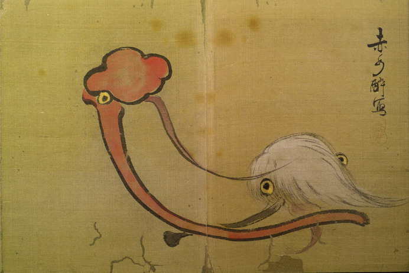

払子と如意の化物。払子の軸は茶色く、白い毛がついている。如意は赤い。いずれも目玉がついており、赤く長い舌を出している。
著作者：赤水酔／出典：親書誌：U426_nichibunken_0155：東都画家妖怪画帖；トウトガカヨウカイガチョウ／日付：2010／資源識別子：U426_nichibunken_0155_0007_0000
Copyright (c)2010- International Research Center for Japanese Studies, Kyoto, Japan. All rights reserved.